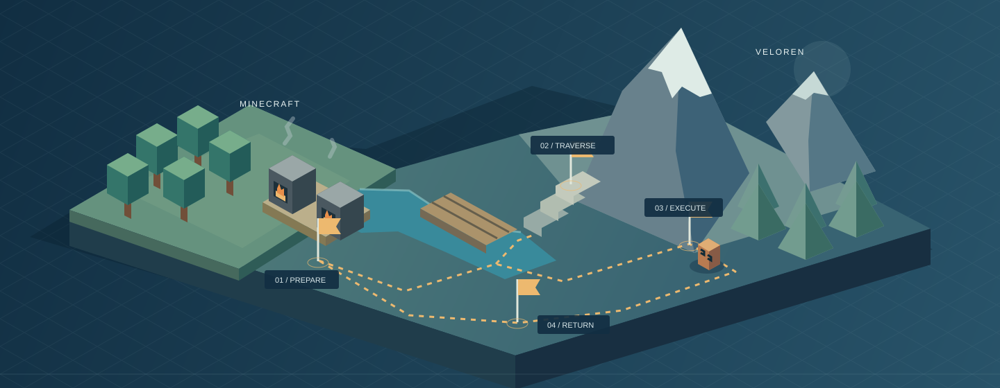

Time has consequences
Inference is part of the episode. Enemies, native production, and relevant timers can continue while the agent reasons.
The world
does not wait.
Think ahead. Act in time. Live with the consequences.
A research benchmark for connected decisions in living 3D game worlds.

First baseline archived. Independent reproduction and public packaging in progress.
01 / The question
Gathering, fighting, crafting, and returning are connected decisions. The challenge is not simply executing each skill, but coordinating them while the world keeps changing.
Inference is part of the episode. Enemies, native production, and relevant timers can continue while the agent reasons.
Resources used now may be needed later. A local setback can leave a different world for the next stage.
Viewpoint, terrain, collisions, and positioning shape what an agent can observe and actually do in 3D.
02 / The environments
Thirty tasks per game, each configured for both tracks. These examples show task mechanics, not claims that the baseline solved them.
Production, navigation, construction, and defense in a world whose state carries across decisions.
Featured task / Shared fuel dispatch
Return with 8 iron ingots, 8 cooked beef, and 8 glass while retaining coal and planks. Fuel keeps burning as the agent manages production.
Extra timber can be gathered legally: poor allocation may increase recovery cost rather than make completion impossible.
Combat, provisioning, crafting, and delivery with native movement, recovery, and persistent world effects.
Featured task / Hostile route supply recovery
Retrieve leather, defeat two Green Legooms, and return alive. Loose supplies normally expire after about five minutes; death does not reset the world.
Other lawful leather sources count. A missed pickup window alone does not establish that the task is impossible.
Original concept illustrations are used in this preview. Reviewed gameplay media is not yet included; no illustration represents a recorded successful run.
03 / The interfaces
Study visual control or work with explicitly permitted state and fixed skills. Compare systems within a track, not as if the two tracks differed only in vision.
Same real-time principle. Neither track pauses the world for model reasoning. Private evaluator evidence stays separate from agent input.
04 / First baseline
GPT-6 Astra · low reasoning effort
Tool-calling baseline · One accepted episode per task–mode combination
37/120
83 valid game failures. Historical infrastructure attempts are not included in these outcome counts.
Download the summary CSV| Condition | Success rate | Solved |
|---|---|---|
| Minecraft ST | 21 / 30 | |
| Minecraft VM | 6 / 30 | |
| Veloren ST | 10 / 30 | |
| Veloren VM | 0 / 30 |
ST and VM change both observations and actions. Their score gap is not a pure vision ablation.
A fixed-catalog snapshot. One model, one scaffold, one accepted episode per combination. These are development results, not a held-out comparison or an estimate of per-task reliability. The collection includes 100 solo and 20 team episodes.
Versioned, not uniform. The run spans 14 frozen input releases. Historical task and execution identities must be retained; the current source commit does not retroactively replace them.
Zero is not a diagnosis. An offline review reproduced all 30 Veloren VM evaluations and found no latest-image mismatches in 6,899 logged prompts. It did not establish a systemic defect explaining the zero success rate, nor prove that every task is bug-free or independently solvable. Basic visual-control failures remain a confound for planning claims.
Incomplete cost evidence. Token usage is complete for 88 of 120 episodes. Unknown usage is not zero, and token counts are not a verified dollar cost.
Collection: astra_baseline120_fixed20_20261101
Verified: 2026-11-01 · See summary provenance.
05 / Research notes
Real-time control and long-horizon planning are not new ideas. Our research direction is more specific: understand how early decisions carry into later stages, without confusing a planning failure with an execution failure.
Read the design and first-baseline story06 / Build with us
The next milestone is independent reproduction, not a larger list of model scores. Start with the documentation and select only tasks supported by your installed runtimes.
Installation requirements, game setup, and a single-task configuration.
02 / EXTENDIntegrate a model, an agent framework, a task, or a game adapter.
03 / REPRODUCEReport installation findings, task limitations, and reproducibility issues.